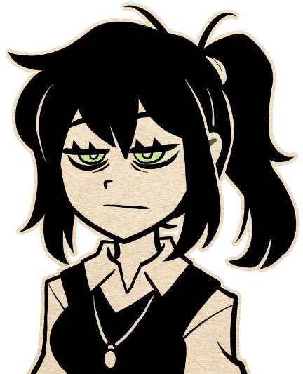

Персонаж ПамятиРене
Рене — один из наиболее загадочных персонажей вселенной The Coffin of Andy and Leyley. Он возникает в сюжете через пласты воспоминаний, сюрреалистические сны и кошмары главных героев, символизируя связь со старой жизнью семьи Грейвс до роковой катастрофы.
Кто Такой Рене и Какова Его Роль?
В повествовании Nemlei Рене служит живым воплощением подавленных воспоминаний. В то время как события в заблокированной квартире развиваются стремительно, внутренний мир Эндрю непрестанно возвращает его к прошлым ошибкам, в которых фигурирует Рене.
Его появление в кошмарах проливает свет на истоки отчуждения семьи Грейвс, раскрывая причины, почему брат и сестра стали настолько оторванными от общества и моральных устоев задолго до того, как в городе начался карантин.
Психологический Символизм
Призрак Вины Энди
Рене олицетворяет те моменты, когда Эндрю проявил трусость или не смог защитить других от жестоких выходок Эшли. В галлюцинациях образ Рене судит Эндрю за его покорность сестре.
Раздражитель для Эшли
Для Эшли любой человек из прошлого Эндрю — это конкурент за его внимание. Даже в воспоминаниях она стремится очернить или стереть память о Рене, чтобы единолично владеть разумом брата.
Ожидания от Эпизода 3
Сообщество игроков и фанатов ожидает, что в финальном третьем эпизоде тайна вокруг роли Рене и полного прошлого семьи Грейвс будет окончательно раскрыта. Его линия может стать решающим фактором в психологическом суде над главными героями.
- Раскрытие детской травмы: События, произошедшие между Эндрю, Эшли и Рене за годы до изоляции.
- Финальный выбор Энди: Принять ответственность за грехи прошлого или окончательно отдаться во власть безумия Эшли.